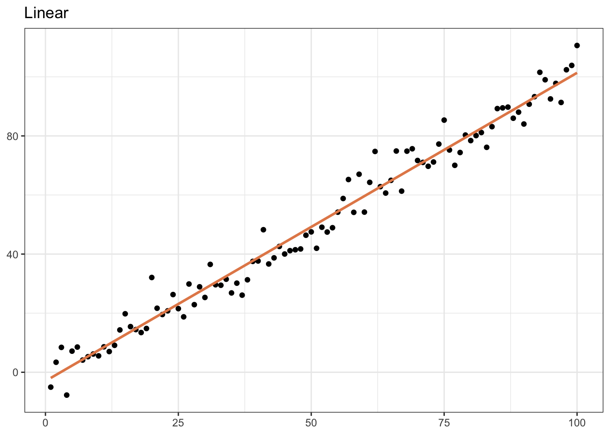
Linear Regression
Modeling
- Use models to explore the relationship between variables and to make predictions
- Explaining relationships (usually interested in causal relationships, but not always)
- Does oil wealth impact regime type?
- Predictive modeling
- Where is violence most likely to happen in (country X) during their next election?
- Is this email spam?
Modeling
Modeling
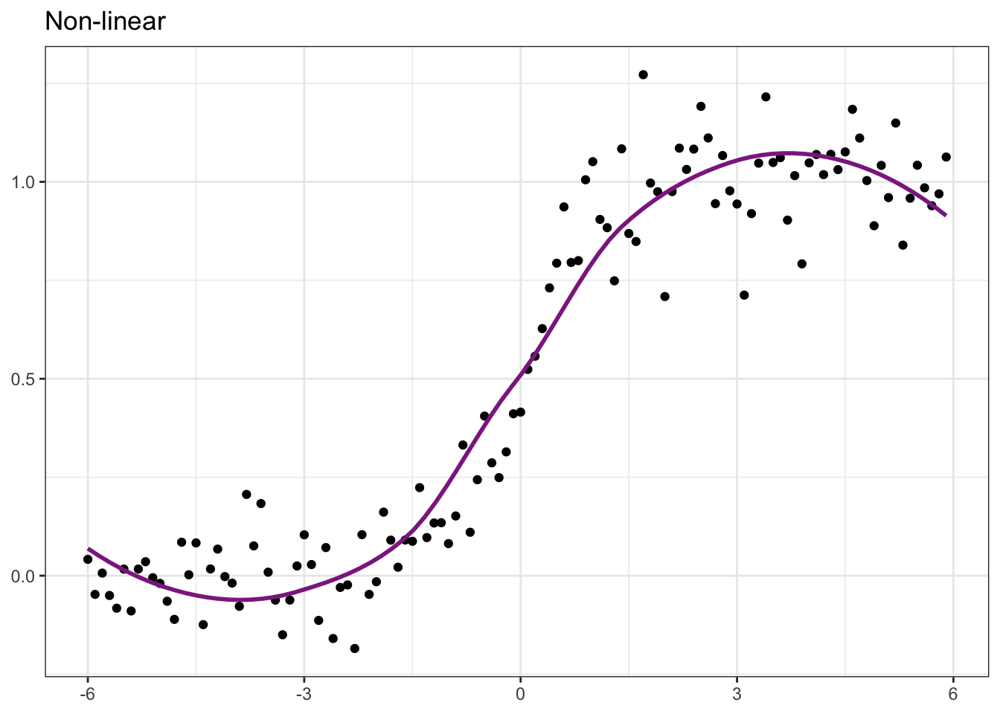
Example: GDP per capita and Democracy
Pull in the VDEM Data
library(vdemlite)
model_data <- fetchdem(indicators = c("v2x_libdem", "e_gdppc"),
start_year = 2019, end_year = 2019) |>
rename(
country = country_name,
lib_dem = v2x_libdem,
wealth = e_gdppc
)
glimpse(model_data)Plot the Data
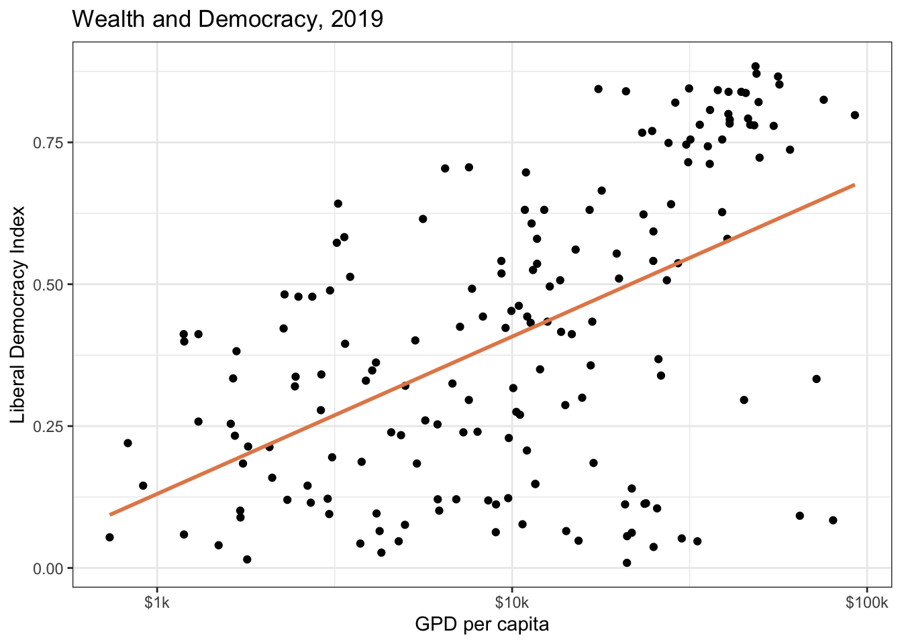
Plot the Data
Models as Functions
- We can represent relationships between variables using functions
- A function is a mathematical concept: the relationship between an output and one or more inputs
- Plug in the inputs and receive back the output
- Example: The formula \(y = 3x + 7\) is a function with input \(x\) and output \(y\).
- If \(x\) is \(5\), \(y\) is \(22\),
- \(y = 3 \times 5 + 7 = 22\)
Quant Lingo
- Response variable: Variable whose behavior or variation you are trying to understand, on the y-axis in the plot
- Dependent variable
- Outcome variable
- Y variable
- Explanatory variables: Other variables that you want to use to explain the variation in the response, on the x-axis in the plot
- Independent variables
- Predictors
Linear model with one explanatory variable…
- \(Y = a + bX\)
- \(Y\) is the outcome variable
- \(X\) is the explanatory variable
- \(a\) is the intercept: the predicted value of \(Y\) when \(X\) is equal to 0
- \(b\) is the slope of the line (rise over run)
Quant Lingo
- Predicted value: Output of the model function
- The model function gives the typical (expected) value of the response variable conditioning on the explanatory variables
- We often call this \(\hat{Y}\) to differentiate the predicted value from an observed value of Y in the data
- Residuals: A measure of how far each case is from its predicted value (based on a particular model)
- Residual = Observed value (\(Y\)) - Predicted value (\(\hat{Y}\))
- How far above/below the expected value each case is
Caution
Note that for the next few examples we will be analyzing GDP per capita on a log scale.
Residuals
Linear Model
\(\hat{Y} = a + b \times X\)
\(\hat{Y} = 0.13 + 0.12 \times X\)
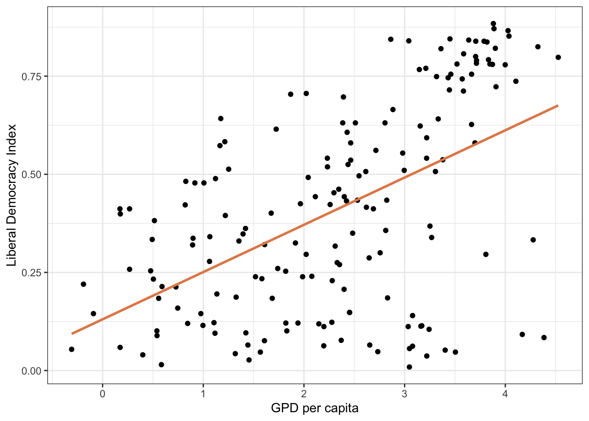
Linear Model: Interpretation
\(\hat{Y} = a + b \times X\)
\(\hat{Y} = 0.13 + 0.12 \times X\)
\(\hat{Y} = 0.13 + 0.12 \times X\)
What is the interpretation of our estimate of \(a\)?
. . .
\(\hat{Y} = 0.13 + 0.12 \times 0\)
\(\hat{Y} = 0.13\)
\(\hat{Y} = 0.13\)
\(a\) is our predicted level of democracy when GDP per capita is 0.
Linear Model: Interpretation
\(\hat{Y} = a + b \times X\)
\(\hat{Y} = 0.13 + 0.12 \times X\)
\(\hat{Y} = 0.13 + 0.12 \times X\)
What is interpretation of our estimate of \(b\)?
. . .
\(\hat{Y} = a + \frac{Rise}{Run} \times X\)
\(\hat{Y} = a + \frac{Change Y}{Change X} \times X\)
\(\hat{Y} = a + \frac{Change Y}{Change X} \times X\)
Linear Model: Interpretation
\(b = \frac{Change Y}{Change X}\)
\(0.12 = \frac{Change Y}{Change X}\)
\({Change Y} = 0.12 * {ChangeX}\)
\(0.12 = \frac{Change Y}{Change X}\)
\({Change Y} = 0.12 * {ChangeX}\)
. . .
When \(ChangeX = 1\):
\({Change Y = 0.12}\)
\({Change Y = 0.12}\)
. . .
\(b\) is the predicted change in \(Y\) associated with a ONE unit change in X.
Linear Model: Interpretation
Linear Model: Interpretation
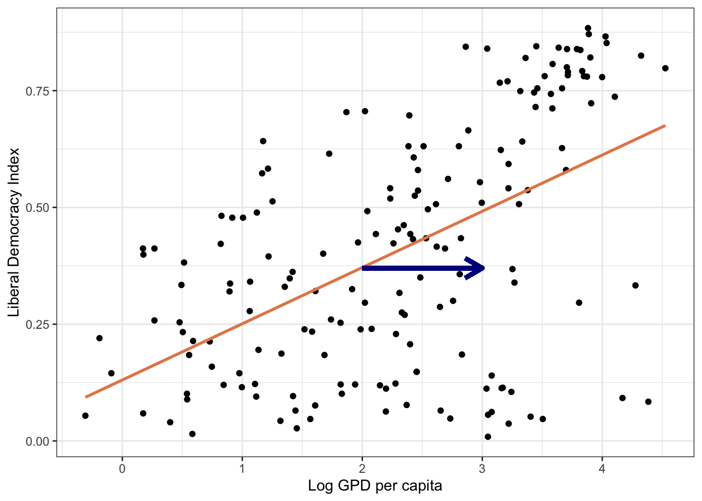
Linear Model: Interpretation
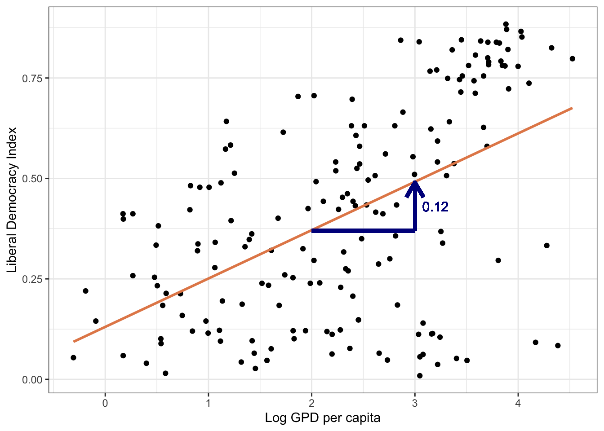
Interpreting the Coefficient for log(Wealth)
Model: Democracy = 0.12 × log(Wealth)
Coefficient Interpretation:
- A 1% increase in GDP per capita is associated with a 0.0012 increase in the democracy score
- Doubling GDP per capita (e.g., from $10,000 to $20,000) increases the democracy score by 0.12 points
In Dollar Terms:
- If GDP per capita increases by 10% (e.g., from $10,000 to $11,000), the democracy score is expected to increase by 0.012 points
Linear Model: Interpretation
Is this the causal effect of GDP per capita on liberal democracy?
. . .
No! It is only the association…
. . .
To identify causality we need other methods (beyond the scope of this course).
Your Task
An economist is interested in the relationship between years of education and hourly wages. They estimate a linear model with estimates of \(a\) and \(b\) as follows:
\(\hat{Y} = 9 + 1.60*{YrsEdu}\)
1. Interpret \(a\) and \(b\)
2. What is the predicted hourly wage for those with 10 years of education?
3. How about for those with a high school diploma? (12 yrs)
4. What about a college degree? (16 yrs)
2. What is the predicted hourly wage for those with 10 years of education?
3. How about for those with a high school diploma? (12 yrs)
4. What about a college degree? (16 yrs)
Next step
- Linear model with one predictor: \(Y = a + bX\)
- For any given data…
- How do we figure out what the best values are for \(a\) and \(b\)??
Estimation
Linear Model with Single Predictor
Goal: Estimate Democracy score (\(\hat{Y_{i}}\)) of a country given level of GDP per capita (\(X_{i}\)).
Or: Estimate relationship between GDP per capita and democracy.
Linear Model with Single Predictor

Estimate Model
model1 <- lm(lib_dem ~ log_wealth, data = modelData)
summary(model1)
Call:
lm(formula = lib_dem ~ log_wealth, data = modelData)
Residuals:
Min 1Q Median 3Q Max
-0.57441 -0.14334 0.03911 0.18730 0.37017
Coefficients:
Estimate Std. Error t value Pr(>|t|)
(Intercept) 0.13051 0.03806 3.429 0.000758 ***
log_wealth 0.12040 0.01471 8.188 5.75e-14 ***
---
Signif. codes: 0 '***' 0.001 '**' 0.01 '*' 0.05 '.' 0.1 ' ' 1
Residual standard error: 0.2233 on 172 degrees of freedom
(5 observations deleted due to missingness)
Multiple R-squared: 0.2805, Adjusted R-squared: 0.2763
F-statistic: 67.04 on 1 and 172 DF, p-value: 5.754e-14In equation form… How do we interpret the model?
\[\widehat{Democracy}_{i} = 0.13 + 0.12 * {loggdppc}_{i}\]
Question
How do we get the “best” values for the slope and intercept?
How would you draw the “best” line?
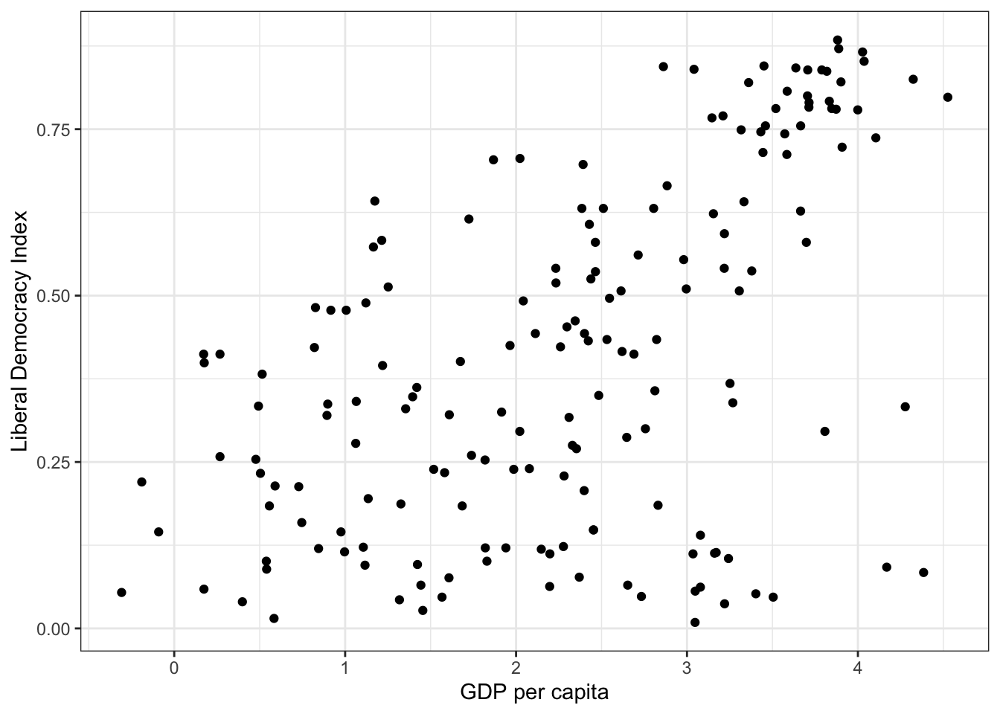
How would you draw the “best” line?

Least squares regression
- Remember the residual is the difference between the actual value and the predicted value
. . .
- The regression line minimizes the sum of squared residuals.
Least squares regression
Residual for each point is: \(e_i = y_i - \hat{y}_i\)
Least squares regression line minimizes \(\sum_{i = 1}^n e_i^2\).
. . .
- Why do we square the residual?
. . .
Why not take absolute value?
- Principle: larger penalty for residuals further away
- Math: makes the math easier and some nice properties (not our concern here…)
Least squares regression
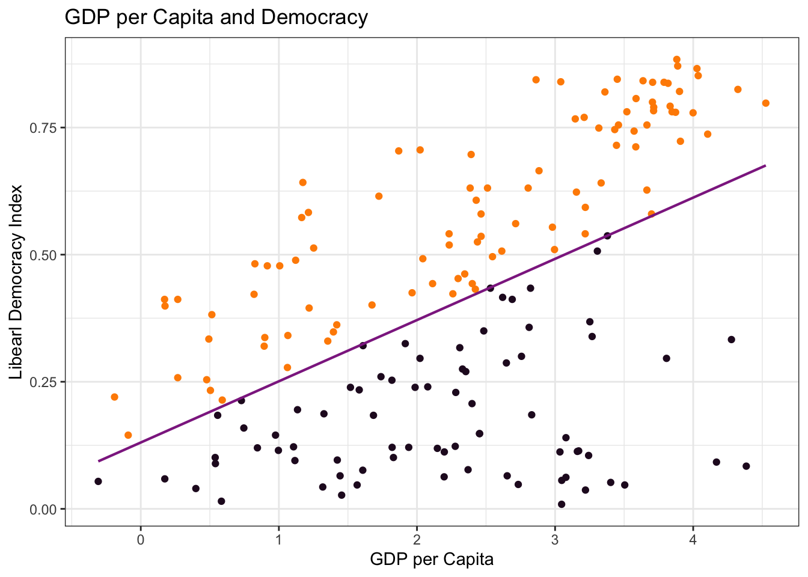
Very Simple Example
What should the slope and intercept be?

Example
\(\hat{Y} = 0 + 1*X\)

Example
What is the sum of squared residuals?
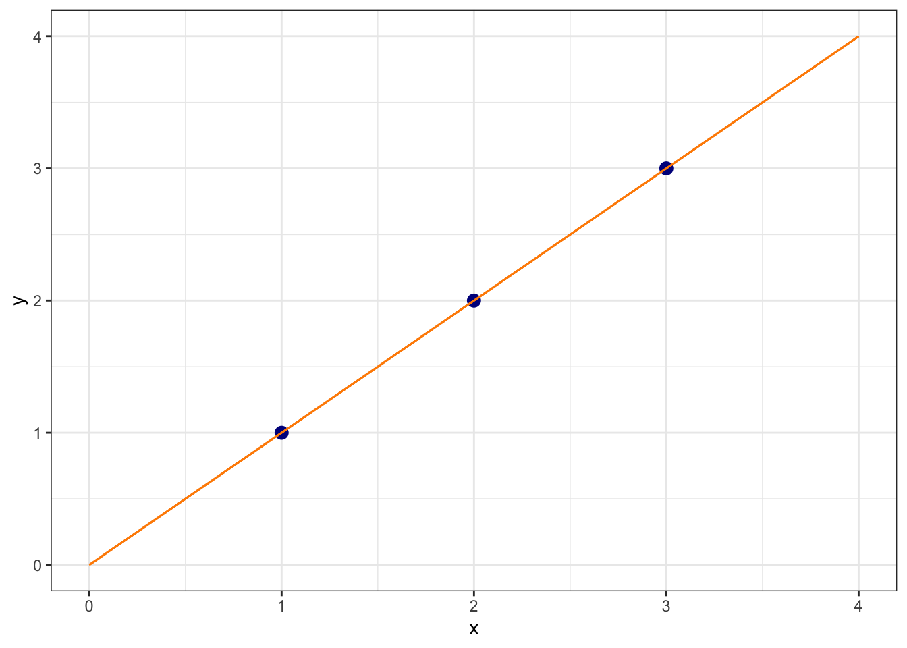
Example
What is sum of squared residuals for \(y = 0 + 0*X\)?
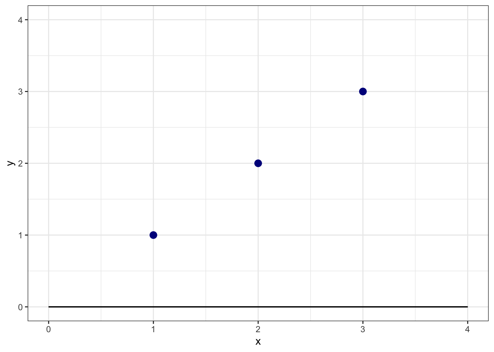
Example
What is sum of squared residuals for \(y = 0 + 0*X\)?

(1-0)^2 + (2-0)^2 + (3-0)^2[1] 14Example
What is sum of squared residuals for \(y = 0 + 2*X\)?
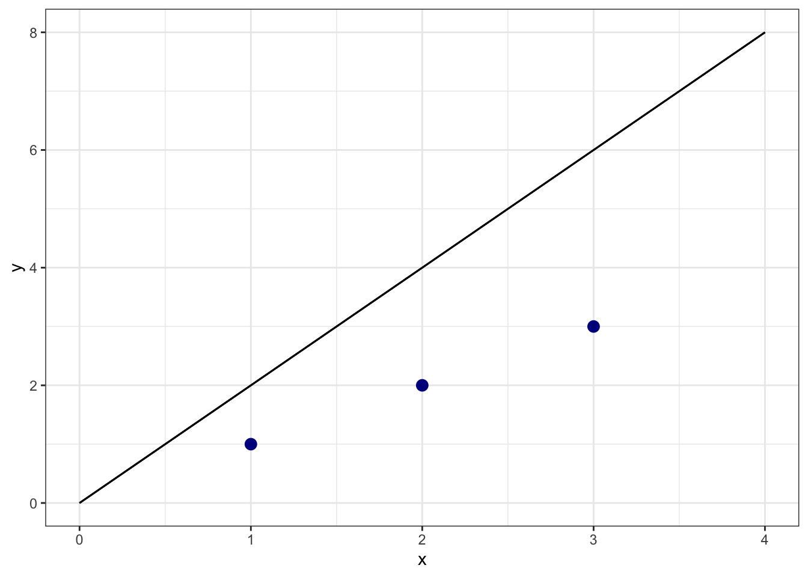
Example
What is sum of squared residuals for \(y = 0 + 2*X\)?

(1-2)^2 + (2-4)^2 + (3-6)^2[1] 14One more…
What is sum of squared residuals for \(y = 0 + -1*X\)?
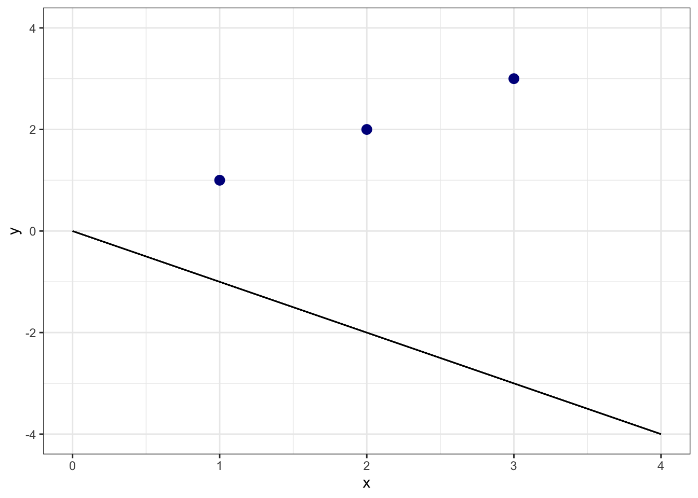
One more…
What is sum of squared residuals for \(y = 0 + -1*X\)?

(1+1)^2 + (2+2)^2 + (3+3)^2[1] 56Cost Function
Sum of Squared Residuals as function of possible values of \(b\)

Least Squares Regression
When we estimate a least squares regression, it is looking for the line that minimizes sum of squared residuals
In the simple example, I set \(a=0\) to make it easier. More complicated when searching for combination of \(a\) and \(b\) that minimize, but same basic idea
Least Squares Regression
There is a way to solve for this analytically for linear regression (i.e., by doing math…)
– They made us do this in grad school…
. . .
- In machine learning, people also use gradient descent algorithm in which the computer searches over possible combinations of \(a\) and \(b\) until it settles on the lowest point.
Least Squares Regression
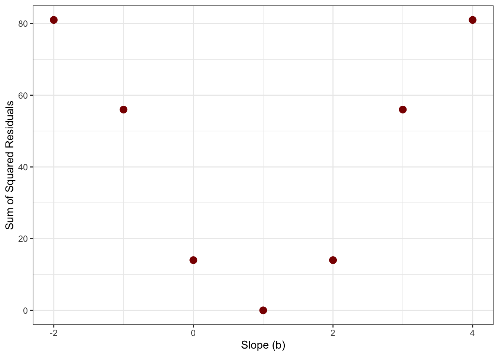